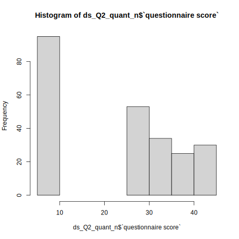

| dataSource | Ctl | Syn |
|---|---|---|
| PeterCor | 21 | 13 |
| Rothen | 37 | 22 |
| Ward | 204 | 249 |
Pre-registered report: Space Sequence Synesthesia Diagnostic using form mapping
Rémy Lachelin, Chhavi Sachadva, and Nicolas Rothen
Psychology, Uni Distance Suisse
Author Note
Rémy Lachelin  https://orcid.org/0000-0000-0000-0000
https://orcid.org/0000-0000-0000-0000
Chhavi Sachadva  https://orcid.org/0000-0000-0000-0000
https://orcid.org/0000-0000-0000-0000
Nicolas Rothen  https://orcid.org/0000-0000-0000-0000
https://orcid.org/0000-0000-0000-0000
Correspondence concerning this article should be addressed to Rémy Lachelin, Psychology, Uni Distance Suisse, Brig road, Brig, Valais 0, Email: remy.lachlein@fernuni.ch
Abstract
This is my abstract.
Keywords: Space sequence synesthesia, consistency
Pre-registered report: Space Sequence Synesthesia Diagnostic using form mapping
Abstract:
Space sequence synesthesia is the phenomenon of representing ordered visual symbols in particular spatial positions. Not everyone has space sequence synesthesia. Existent tools to detect space sequence synethesia are based on self-reports (i.e. questionnaire) and response consistency. Consistency can be derived on the stimulus level, i.e. spatial deviation in time, or on the form level, i.e. geometrical properties. In this pre-registered report, available data from 467 participants is used to explore new tools to discriminate syntheses from controls. Conceptually, the novel criteria aim at taking advantage of the inducer’s ordinality that create synesthetic forms. For this aim, we harness a geography package to extract geometrical features to use as a test for synethesia. Reciever Operator Characteristics are used to select the features that best classify the groups. In a second phase, we will test the predictive power of the new diagnostic features on an additional dataset that has yet to be collected.
Introduction
Sequence Space Synesthesia (SSS) is defined as representing ordered sequences in particular spatial positions. For example, numbers (the inducers) are perceived as arranged particular positions in space (the concurrent), also called number forms (Galton, 1880). In addition to numbers, SSS might also perceive weekdays and months in particular arrangement in space.
Estimated prevalence for SSS in the general population spans between 4.4 % (Brang et al., 2013) and 14.2 % (Seron et al., 1992), see also (Sagiv et al., 2006; Ward et al., 2018). Hence a reliable diagnostic tool to detect SSS would also be useful to investigate SSS. SSS forms are idiosyncratic, meaning they each individual might have a different form. Idiosyncrasy makes it difficult to diagnose SSS.
Diagnostic depends on the definition of the conditions under investigation. A strict definition of Synestheesia requires five different criteria (Deroy & Spence, 2013). Automaticity: the inducer automatically triggers the concurrent. For example 10 might automatically be the number in the highest position. Unidirectionality: while the inducer triggers the concurrent, the concurrent does not trigger the inducer. Hence the highest position does not trigger the number 10. Consciousness: The concurrent is consciously perceived. Developmentally early: the experience was already present during childhood. Consistency: the inducer-concurrent pair remains stable in time. For example, the particular position triggered by 10 is stable in time. Consistency is a well suited charachteristic of synesthesia to develop a diagnostic tool. For esample a consistency test is used to diagnose grapheme-colour synesthesia (Rothen et al., 2013a). While the original groups of synesthetes are mostly generated by self-reports.
Hence given consistency, similar concurrent responses triggered by the same inducers can be used as a marker for authentic SSS. Consistency test have become golden standart for colour-grapheme synesthesia, where an inducer is presented (i.e. letters of the alphabet) and the participant is requested to selected the concurrent colour, using a colour picker. Individual consistency is then calculated as the distance between repeated colour responses to the same inducers. Interestingly, the best colour space to detect colour-grapheme synesthesia is CIE*LUV, a colour space developed to be isoform to human perception (Rothen et al., 2013b). Analogously to grapheme-colour synesthetes, consistency test can be used to diagnose SSS. In that tasks, it is repeatedly asked to report the position of the inducers on a screen. The total area between the responses of same inducer (i.e. a triangle if repeated three times) is then used as characteristic to diagnose SSS. The rationale being that consistent responses would lead to smaller area than inconsistent ones (Rothen et al., 2016). This method resembles how number forms are describe in the single case study (Piazza et al., 2006), see Experiment 1.
However disciminating synesthesia using total area has several limitations. For example high consistency by non-synesthetes can be achieved by giving all responses on the same screen position (i.e. false positive). Moreover, this kind of criteria might bias the diagnosis to include synesthetes with straight lines which leads to less variability than more complex forms(Ward?).
The goal of the present registered report is to first identify new features characterizing synesthetes responses based on already available datasets and test the best working features on a future dataset. The new features are designed to take advantage of two properties of synesthetic responses that have not been included in precedent consistency tests. First, sequentiality on top of single inducer responses the ordered position between subsequent induces is important. For example the relative position of August and the other months. From numerical cognition, ordinality has been acknowledged to be an important semantic property of numbers, also given their sequential acquisition (i.e. 1 is learned before 2). Second, thee particular synthetic forms of the sequential spatial location. These forms might have geometrical properties. For example months of the year might be represented circularly (as already described by (Galton, 1880) for numbers).
To take advantage of sequential and geometrical synesthetic forms, we harnessed a geo-spatial package(Pebesma, 2018) to extract geometrical features from participant x and y coordinate responses. This packages allows for example to build string or polygons for each repetition and compare different geometrical features. Those individual geometrical features are then compared using Receiver Operator Characteristics (ROC) between individuals grouped as synesthets and control. In the present phase I,we compare ROC on three merged derivation datasets using the same task on SSS Ward (n.d.-a). In future phase II, we compare whether the features selected to diagnose SSS in phase I, on a validation dataset that is not yet acquired (registered report on the open science foundation: https://osf.io/9efjb/).
General Methods
Phase I: present analyses. We merge three available dataset and compared available diagnostic criteria across datasets using Receiver Operator Characteristics (ROC) for different approaches. A first approach of diagnostic criteria based on a stimulus level consistency. The rationale being that synesthetes should produce more consistent (i.e. less variable) across repetitions. Such criteria include area between repetitions1, standard deviation of responses (Ward, n.d.-a) or permuting the responses to compare each responses to a permuted chance level Root (Root et al., 2021). The second suggested approach is to look at the geometrical form generated by the responses across repetitions. The rationale here is that synesthetic responses should have geometrical feature that differ from controls. For example, several SSS representations for months are circular. For the form
Third, we compare whether the features lead to similar ROC characteristics across the different sets (i.e. for months, weeks and numbers). Fourth, we compute new candidate geometrical features that could be used to diagnose SS. Finally we summarize and compare all ROC and select the best features that class synesthetes from control with the merged dataset.
Phase II: future analyses. On a future dataset to be collected using the same task, we will compare the predictive power of the selected features using ROC.
Materials
A the exception of (Rothen et al., 2016) (see https://osf.io/6hq94/files/osfstorage), the data from (Van Petersen et al., 2020a; Ward, n.d.-a) were collected online. The 29 inducers were: the 12 months of a year, 7 days of the week and 10 numbers (i.e. hindo-arabic numerals from 0 to 9). (Van Petersen et al., 2020a) Also presented 50 and 100 numerals, which we excluded here. (Ward, n.d.-a) data is collected using the Syntoolkit.
Procedure
The details for each procedure is described in each respective article (Rothen et al., 2016; Van Petersen et al., 2020a; Ward, n.d.-a), here we describe the common task.
Each participant is presented with one one inducer at a time at the center of a otherwise white screen. The participant is instructed to click at the screen position that they visualize them. Inducers order is randomized and each inducer is repeated three times.
The order of the stimuli was randomized, but such that no stimulus was repeated until the previous batch of unique stimuli (N = 29) had been presented.
Importantly, while the three datasets inclucded in phase I include three repetitions per stimuli, the phase II will use four repetition per stimuli. Hence the cut-offs will be designed to be scalable to different number of repetitions and stimulus.
Phase I Methods
Phase I: Merge and prepare data
We merged three datasets: Rothen et al. (2016)],(Ward, n.d.-a) (from: https://osf.io/p5xsd/files/osfstorage) and (Van Petersen et al., 2020b). To match the other datasets, stimuli form (Van Petersen et al., 2020b) are translated from dutch to English and for the stimuli, only numbers from 0 to 9 are kept (excluding 50 and 100). The x and y coordinates were then separately normalized (z-score) per participant.
Invalid responses were additinally set as NaN if a participan’ts coordinate were the same across conditions and repetitions. Then, we excluded 35 participants who had less than 50 % of valid responses per conditions and repetitions. We also manually adjusted the screen size from some participants since those values changed across the experiment.
Phase I. Population
For all the three datasets, the synesthetes were self-reported.
| Source | Synesthetes | Controls | Total | ||||
|---|---|---|---|---|---|---|---|
| N | Age | n females | N | Age | n females | ||
| (Rothen et al., 2016) | 33 | 23.1 | 24 | 37 | 28.2 | 27 | 70 |
| (Van Petersen et al., 2020b) | 23 | 23.22 | 20 | 21 | 21.57 | 19 | 44 |
| (Ward, n.d.-b) | 252 | 37.21 | 202 | 215 | 19.90 | 178 | 467 |
| Merged | 308 | 273 | 557 |
Phase I. Analysis
First, we replicate consistency methods found in the literature using the same task ((Root et al., 2021; Rothen et al., 2016; Van Petersen et al., 2020a; Ward, n.d.-a)) and compare the results.
Second, we extract features based on the form. (C) We harness a geography package to compute segment based features (D) We compute polygon based features. (E) Convex Hull (F) Angles.
Phase I. Results Reproduce
Replicated features
Triangle area Consistency
Definition: Calculating consistency. Each stimulus is represented by three xy coordinates - (x1, y1), (x2, y2), (x3, y3) - from the three repetitions. For each stimulus, the area of the triangle bounded by the coordinates is calculated as follows:
Area = (x1y2 + x2y3 + x3y1 – x1y3 – x2y1 – x3y2) / 2
Perimeter (pixel):
Area to Perimeter
Phase I. Results: Novel features
Spread
Segment self-intersection
We calculated the number of self intersection for each segments sperately for repetitions and conditions. For each participant we then compute the average of self intersections per conditions and repetitions.
Segments (with sf)
We will take advantage of the sf package and connect the x and y coordinates of ordered inducer with a segment. Sf hates NaN’s. Either convert them to 0 (as originally) or remove them. I’ll start converting to 0.
Polygon based geometries
Polygon area
Polygon perimeter
Area/perimeter
Polygon simplicity
Topological validity Structure
From the package description: “For projected geometries, st_make_valid uses the lwgeom_makevalid method also used by the PostGIS command ST_makevalid if the GEOS version linked to is smaller than 3.8.0, and otherwise the version shipped in GEOS; for geometries having ellipsoidal coordinates s2::s2_rebuild is being used.” From https://postgis.net/docs/ST_IsValid.html: value is well-formed and valid in 2D according to the OGC rules. (Open Geopsatial Consotrtium)
Permutations
Until now the form based features are computed by chronologically ordered repetitions. For example, Monday is repeated three times per ID. The coordinates for Monday presented the first time will always be used to form the segment/polygon with the Tuesday presented the first time. However, for consistency, this should be independent from chronological order. To circumvent this, we can permute the repetitions per conditions. I predict the permuted averages of the same features should give rise to better AUC. Since these are time consuming I will only apply permutations on the criteria that are at stake:
topological validity.
Combine valid and area criteria
What if we combined consistency and permuted topological validity?
Correlations
Permute correlations
Compare all features:
Compute all ROC
Summaries
Summary table:
| Feature | AUC | threshold | sensitivity | specificity | ppv | npv | ci_low | ci_high |
|---|---|---|---|---|---|---|---|---|
| GLMValid_area_zs | 81.85 | -0.24 | 80.28 | 72.90 | 76.25 | 77.33 | 78.30 | 85.40 |
| isValid_M_perm_ID | 81.17 | 0.14 | 73.94 | 76.34 | 77.21 | 72.99 | 77.57 | 84.77 |
| triangle_perim_GA_zs | 80.47 | 1.92 | 74.38 | 76.72 | 77.41 | 73.63 | 76.66 | 84.27 |
| isValid_Med_perm_ID | 79.41 | 0.17 | 66.90 | 80.15 | 78.51 | 69.08 | 75.75 | 83.07 |
| Corr_M_perm_ID | 78.68 | 0.51 | 76.41 | 71.04 | 74.32 | 73.31 | 74.80 | 82.55 |
| Corr_Med_perm_ID | 78.68 | 0.48 | 79.23 | 67.95 | 73.05 | 74.89 | 74.81 | 82.55 |
| GA_corr | 77.78 | 0.59 | 74.20 | 70.92 | 74.20 | 70.92 | 73.81 | 81.76 |
| isValidStruct_GA | 77.77 | 0.17 | 71.83 | 74.43 | 75.28 | 70.91 | 73.95 | 81.59 |
| areatoPerim_GA | 75.59 | 0.14 | 58.80 | 84.35 | 80.29 | 65.38 | 71.55 | 79.63 |
| SelfInter_persegm | 73.20 | 1.17 | 79.58 | 61.07 | 68.90 | 73.39 | 68.91 | 77.49 |
| rep_area_GAzs | 72.35 | 0.08 | 76.41 | 67.56 | 71.85 | 72.54 | 67.85 | 76.86 |
| areaPoly_GA | 70.53 | 1.29 | 61.62 | 69.47 | 68.63 | 62.54 | 66.22 | 74.84 |
| isSimple_GA | 70.41 | 0.28 | 59.86 | 72.14 | 69.96 | 62.38 | 66.10 | 74.71 |
| M_spread_y | 67.80 | 85.30 | 75.35 | 62.21 | 68.37 | 69.96 | 63.13 | 72.47 |
| repAreatoPerim | 66.44 | 29.53 | 69.75 | 61.45 | 65.99 | 65.45 | 61.68 | 71.20 |
| M_spread_x | 63.51 | 124.58 | 91.90 | 40.84 | 62.74 | 82.31 | 58.74 | 68.28 |
| perim_GA | 61.22 | 9.65 | 79.23 | 49.24 | 62.85 | 68.62 | 56.31 | 66.12 |
| M_corr | 59.18 | 0.20 | 83.10 | 37.40 | 59.00 | 67.12 | 54.30 | 64.05 |
| rep_area | 50.40 | 2,338.97 | 75.35 | 40.46 | 57.84 | 60.23 | 45.31 | 55.49 |
Summary plot

By questionnaire score
ROC for subsambled data (from Ward).
| Feature | AUC | threshold | sensitivity | specificity | ppv | npv | ci_low | ci_high |
|---|---|---|---|---|---|---|---|---|
| triangle_perim_GA_zs | 83.77 | 2.02 | 75.90 | 80.88 | 82.89 | 73.33 | 79.94 | 87.60 |
| GLMValid_area_zs | 81.86 | -0.24 | 79.12 | 75.49 | 79.76 | 74.76 | 77.93 | 85.79 |
| isValid_M_perm_ID | 81.23 | 0.12 | 76.31 | 76.47 | 79.83 | 72.56 | 77.23 | 85.23 |
| Corr_Med_perm_ID | 80.34 | 0.48 | 77.91 | 71.64 | 77.29 | 72.36 | 76.19 | 84.48 |
| Corr_M_perm_ID | 80.33 | 0.38 | 86.75 | 62.69 | 74.23 | 79.25 | 76.18 | 84.47 |
| isValid_Med_perm_ID | 79.30 | 0.17 | 65.86 | 81.86 | 81.59 | 66.27 | 75.27 | 83.33 |
| GA_corr | 79.25 | 0.52 | 81.05 | 66.84 | 75.85 | 73.30 | 74.96 | 83.54 |
| isValidStruct_GA | 77.46 | 0.17 | 70.28 | 76.96 | 78.83 | 67.97 | 73.25 | 81.67 |
| SelfInter_persegm | 76.53 | 4.83 | 92.77 | 52.45 | 70.43 | 85.60 | 71.95 | 81.11 |
| areatoPerim_GA | 76.00 | 0.14 | 57.83 | 84.80 | 82.29 | 62.23 | 71.59 | 80.40 |
| M_spread_y | 74.98 | 77.57 | 77.91 | 68.14 | 74.90 | 71.65 | 70.28 | 79.67 |
| rep_area_GAzs | 73.30 | 0.08 | 75.10 | 69.61 | 75.10 | 69.61 | 68.30 | 78.29 |
| areaPoly_GA | 70.54 | 1.11 | 66.27 | 63.73 | 69.04 | 60.75 | 65.78 | 75.29 |
| M_spread_x | 68.66 | 124.58 | 91.16 | 49.51 | 68.79 | 82.11 | 63.56 | 73.77 |
| isSimple_GA | 67.65 | 0.17 | 72.29 | 55.88 | 66.67 | 62.30 | 62.77 | 72.53 |
| repAreatoPerim | 66.57 | 22.05 | 78.71 | 53.43 | 67.35 | 67.28 | 61.22 | 71.91 |
| perim_GA | 59.13 | 10.58 | 84.34 | 40.69 | 63.44 | 68.03 | 53.64 | 64.61 |
| M_corr | 58.64 | 0.35 | 94.78 | 29.90 | 62.27 | 82.43 | 53.02 | 64.25 |
| rep_area | 45.33 | 3,852.60 | 81.93 | 27.94 | 58.12 | 55.88 | 39.66 | 51.01 |
ROC for subsambled data by questionnaire quantiles (25% steps).

| |Feature | AUC| threshold| sensitivity| specificity| ppv| npv| ci_low| ci_high|
|:--|:--------------------|-----:|---------:|-----------:|-----------:|-----:|-----:|------:|-------:|
|3 |triangle_perim_GA_zs | 96.32| 1.63| 87.50| 97.83| 98.44| 83.33| 93.39| 99.25|
|7 |SelfInter_persegm | 92.93| 1.94| 95.83| 82.61| 89.61| 92.68| 87.70| 98.17|
|15 |GLMValid_area_zs | 92.12| -0.25| 94.44| 84.78| 90.67| 90.70| 86.54| 97.69|
|13 |isValid_M_perm_ID | 91.30| 0.11| 93.06| 84.78| 90.54| 88.64| 85.29| 97.32|
|18 |Corr_M_perm_ID | 90.80| 0.37| 95.83| 82.22| 89.61| 92.50| 84.11| 97.50|
|19 |Corr_Med_perm_ID | 90.77| 0.37| 95.83| 82.22| 89.61| 92.50| 84.03| 97.52|
|14 |isValid_Med_perm_ID | 90.46| 0.06| 95.83| 76.09| 86.25| 92.11| 84.60| 96.32|
|17 |GA_corr | 89.62| 0.59| 86.11| 85.00| 91.18| 77.27| 82.66| 96.58|
|12 |isValidStruct_GA | 84.77| 0.17| 79.17| 80.43| 86.36| 71.15| 77.26| 92.28|
|5 |M_spread_y | 83.94| 76.99| 84.72| 78.26| 85.92| 76.60| 76.19| 91.69|
|6 |M_spread_x | 81.58| 124.58| 94.44| 63.04| 80.00| 87.88| 73.03| 90.14|
|2 |rep_area_GAzs | 80.40| 0.08| 91.67| 76.09| 85.71| 85.37| 69.83| 90.98|
|10 |areatoPerim_GA | 79.08| 0.14| 68.06| 84.78| 87.50| 62.90| 70.27| 87.89|
|4 |repAreatoPerim | 72.40| 21.87| 91.67| 60.87| 78.57| 82.35| 61.02| 83.78|
|8 |areaPoly_GA | 71.92| 1.09| 69.44| 67.39| 76.92| 58.49| 62.17| 81.67|
|11 |isSimple_GA | 65.37| 0.39| 54.17| 71.74| 75.00| 50.00| 55.08| 75.66|
|16 |M_corr | 60.11| 0.28| 93.06| 39.13| 70.53| 78.26| 48.19| 72.04|
|9 |perim_GA | 59.96| 8.99| 83.33| 50.00| 72.29| 65.71| 48.23| 71.70|
|1 |rep_area | 48.73| 3959.63| 93.06| 39.13| 70.53| 78.26| 35.47| 61.99|
| |Feature | AUC| threshold| sensitivity| specificity| ppv| npv| ci_low| ci_high|
|:--|:--------------------|-----:|---------:|-----------:|-----------:|-----:|-----:|------:|-------:|
|3 |triangle_perim_GA_zs | 96.02| 1.63| 87.50| 96.88| 95.45| 91.18| 93.18| 98.86|
|16 |GLMValid_area_zs | 92.30| -0.25| 94.44| 84.38| 81.93| 95.29| 87.95| 96.66|
|14 |isValid_M_perm_ID | 91.20| 0.11| 93.06| 81.25| 78.82| 93.98| 86.58| 95.82|
|7 |SelfInter_persegm | 91.04| 1.67| 95.83| 73.96| 73.40| 95.95| 86.71| 95.37|
|15 |isValid_Med_perm_ID | 90.08| 0.06| 95.83| 72.92| 72.63| 95.89| 85.30| 94.85|
|20 |Corr_M_perm_ID | 88.99| 0.42| 93.06| 74.47| 73.63| 93.33| 83.91| 94.08|
|21 |Corr_Med_perm_ID | 88.96| 0.42| 93.06| 74.47| 73.63| 93.33| 83.87| 94.06|
|19 |GA_corr | 87.91| 0.59| 86.11| 79.78| 77.50| 87.65| 82.52| 93.29|
|13 |isValidStruct_GA | 85.11| 0.17| 79.17| 81.25| 76.00| 83.87| 79.12| 91.10|
|2 |rep_area_GAzs | 83.30| 0.08| 91.67| 78.12| 75.86| 92.59| 76.42| 90.18|
|5 |M_spread_y | 81.31| 83.78| 81.94| 76.04| 71.95| 84.88| 74.65| 87.97|
|10 |areatoPerim_GA | 78.76| 0.13| 72.22| 79.17| 72.22| 79.17| 71.72| 85.80|
|4 |repAreatoPerim | 76.87| 22.13| 91.67| 65.62| 66.67| 91.30| 69.16| 84.57|
|6 |M_spread_x | 75.22| 119.56| 95.83| 57.29| 62.73| 94.83| 67.86| 82.58|
|8 |areaPoly_GA | 70.95| 1.09| 69.44| 63.54| 58.82| 73.49| 63.17| 78.73|
|11 |isSimple_GA | 70.80| 0.17| 79.17| 53.12| 55.88| 77.27| 63.00| 78.61|
|12 |isSimple_GA | 70.80| 0.39| 54.17| 78.12| 65.00| 69.44| 63.00| 78.61|
|9 |perim_GA | 65.97| 8.99| 83.33| 56.25| 58.82| 81.82| 57.68| 74.26|
|17 |M_corr | 61.43| 0.35| 97.22| 33.33| 52.24| 94.12| 52.89| 69.97|
|18 |M_corr | 61.43| 0.27| 93.06| 37.50| 52.76| 87.80| 52.89| 69.97|
|1 |rep_area | 50.67| 2463.46| 84.72| 43.75| 53.04| 79.25| 41.51| 59.82|
| |Feature | AUC| threshold| sensitivity| specificity| ppv| npv| ci_low| ci_high|
|:--|:--------------------|-----:|---------:|-----------:|-----------:|-----:|-----:|------:|-------:|
|3 |triangle_perim_GA_zs | 90.54| 1.63| 83.33| 89.63| 85.86| 87.68| 86.58| 94.51|
|15 |GLMValid_area_zs | 89.19| -0.06| 84.31| 85.93| 81.90| 87.88| 84.82| 93.55|
|18 |Corr_M_perm_ID | 87.77| 0.52| 85.29| 77.27| 74.36| 87.18| 83.41| 92.14|
|19 |Corr_Med_perm_ID | 87.74| 0.51| 85.29| 77.27| 74.36| 87.18| 83.36| 92.11|
|13 |isValid_M_perm_ID | 87.73| 0.11| 88.24| 79.26| 76.27| 89.92| 82.98| 92.49|
|14 |isValid_Med_perm_ID | 87.31| 0.17| 77.45| 85.93| 80.61| 83.45| 82.79| 91.82|
|17 |GA_corr | 86.55| 0.59| 83.33| 77.78| 75.22| 85.22| 81.84| 91.27|
|12 |isValidStruct_GA | 83.79| 0.17| 77.45| 80.00| 74.53| 82.44| 78.53| 89.04|
|7 |SelfInter_persegm | 83.38| 1.28| 89.22| 69.63| 68.94| 89.52| 78.17| 88.59|
|5 |M_spread_y | 80.36| 77.13| 86.27| 70.37| 68.75| 87.16| 74.63| 86.10|
|10 |areatoPerim_GA | 79.91| 0.14| 65.69| 86.67| 78.82| 76.97| 74.06| 85.77|
|2 |rep_area_GAzs | 79.24| 0.08| 87.25| 73.33| 71.20| 88.39| 73.09| 85.40|
|4 |repAreatoPerim | 73.78| 36.28| 71.57| 76.30| 69.52| 78.03| 67.13| 80.43|
|11 |isSimple_GA | 72.45| 0.28| 67.65| 68.15| 61.61| 73.60| 65.97| 78.93|
|8 |areaPoly_GA | 72.38| 1.09| 70.59| 63.70| 59.50| 74.14| 65.92| 78.84|
|6 |M_spread_x | 71.31| 119.56| 95.10| 52.59| 60.25| 93.42| 64.76| 77.87|
|9 |perim_GA | 63.80| 8.99| 82.35| 54.07| 57.53| 80.22| 56.69| 70.91|
|16 |M_corr | 59.98| 0.32| 96.08| 32.59| 51.85| 91.67| 52.74| 67.22|
|1 |rep_area | 48.83| 2075.54| 79.41| 40.74| 50.31| 72.37| 41.33| 56.33|
| |Feature | AUC| threshold| sensitivity| specificity| ppv| npv| ci_low| ci_high|
|:--|:--------------------|-----:|---------:|-----------:|-----------:|-----:|-----:|------:|-------:|
|3 |triangle_perim_GA_zs | 87.77| 1.64| 76.62| 89.29| 86.76| 80.65| 83.85| 91.70|
|15 |GLMValid_area_zs | 86.04| -0.06| 78.57| 83.93| 81.76| 81.03| 81.92| 90.15|
|13 |isValid_M_perm_ID | 84.66| 0.11| 81.82| 77.98| 77.30| 82.39| 80.32| 89.01|
|18 |Corr_M_perm_ID | 84.45| 0.51| 79.87| 76.97| 76.40| 80.38| 80.17| 88.74|
|19 |Corr_Med_perm_ID | 84.42| 0.51| 79.87| 76.97| 76.40| 80.38| 80.12| 88.71|
|14 |isValid_Med_perm_ID | 83.00| 0.17| 71.43| 83.93| 80.29| 76.22| 78.60| 87.41|
|17 |GA_corr | 82.89| 0.59| 76.47| 77.85| 76.97| 77.36| 78.29| 87.49|
|7 |SelfInter_persegm | 81.58| 1.17| 83.12| 71.43| 72.73| 82.19| 76.84| 86.32|
|12 |isValidStruct_GA | 80.61| 0.17| 72.08| 80.36| 77.08| 75.84| 75.86| 85.36|
|5 |M_spread_y | 78.80| 77.57| 82.47| 71.43| 72.57| 81.63| 73.66| 83.93|
|2 |rep_area_GAzs | 77.95| 0.08| 81.82| 73.21| 73.68| 81.46| 72.55| 83.34|
|10 |areatoPerim_GA | 77.30| 0.14| 63.64| 84.52| 79.03| 71.72| 72.14| 82.45|
|6 |M_spread_x | 71.49| 121.47| 93.51| 52.38| 64.29| 89.80| 65.79| 77.19|
|4 |repAreatoPerim | 71.27| 32.82| 69.48| 72.02| 69.48| 72.02| 65.37| 77.17|
|8 |areaPoly_GA | 70.88| 1.11| 66.23| 64.88| 63.35| 67.70| 65.29| 76.47|
|11 |isSimple_GA | 69.51| 0.28| 61.69| 69.05| 64.63| 66.29| 63.83| 75.19|
|9 |perim_GA | 61.87| 8.97| 77.92| 52.98| 60.30| 72.36| 55.63| 68.12|
|16 |M_corr | 60.51| 0.32| 94.81| 33.93| 56.81| 87.69| 54.17| 66.85|
|1 |rep_area | 47.06| 3852.60| 85.71| 30.36| 53.01| 69.86| 40.51| 53.61|
| |Feature | AUC| threshold| sensitivity| specificity| ppv| npv| ci_low| ci_high|
|:--|:--------------------|-----:|---------:|-----------:|-----------:|-----:|-----:|------:|-------:|
|3 |triangle_perim_GA_zs | 84.85| 2.03| 76.23| 82.38| 83.33| 75.00| 80.98| 88.73|
|15 |GLMValid_area_zs | 82.65| -0.06| 73.54| 82.90| 83.25| 73.06| 78.63| 86.67|
|13 |isValid_M_perm_ID | 82.02| 0.14| 73.99| 80.31| 81.28| 72.77| 77.93| 86.11|
|18 |Corr_M_perm_ID | 81.42| 0.38| 86.55| 64.74| 74.23| 80.39| 77.23| 85.60|
|19 |Corr_Med_perm_ID | 81.42| 0.38| 86.55| 64.74| 74.23| 80.39| 77.23| 85.61|
|17 |GA_corr | 80.45| 0.52| 81.53| 68.13| 75.73| 75.15| 76.11| 84.79|
|14 |isValid_Med_perm_ID | 80.17| 0.17| 66.82| 83.42| 82.32| 68.51| 76.05| 84.29|
|7 |SelfInter_persegm | 78.19| 1.67| 84.30| 64.77| 73.44| 78.12| 73.59| 82.79|
|12 |isValidStruct_GA | 78.03| 0.17| 69.06| 78.76| 78.97| 68.78| 73.69| 82.36|
|10 |areatoPerim_GA | 76.42| 0.14| 60.09| 83.94| 81.21| 64.54| 71.85| 80.99|
|5 |M_spread_y | 76.19| 85.26| 74.89| 72.54| 75.91| 71.43| 71.43| 80.95|
|2 |rep_area_GAzs | 74.67| 0.08| 75.78| 72.02| 75.78| 72.02| 69.59| 79.75|
|8 |areaPoly_GA | 70.93| 1.11| 66.37| 65.28| 68.84| 62.69| 65.99| 75.87|
|6 |M_spread_x | 69.23| 124.58| 91.03| 50.78| 68.12| 83.05| 63.96| 74.51|
|11 |isSimple_GA | 67.90| 0.17| 70.85| 57.51| 65.83| 63.07| 62.83| 72.97|
|4 |repAreatoPerim | 67.85| 29.43| 68.16| 65.80| 69.72| 64.14| 62.37| 73.34|
|16 |M_corr | 59.97| 0.22| 86.10| 39.90| 62.34| 71.30| 54.19| 65.75|
|9 |perim_GA | 59.66| 9.65| 79.82| 46.63| 63.35| 66.67| 53.97| 65.35|
|1 |rep_area | 45.81| 3852.60| 82.06| 29.02| 57.19| 58.33| 39.91| 51.70|Phase II Methods
Phase II Materials:
Materials are described here https://osf.io/pjb6e/?view_only=d467ebf4c1f94076ae4ac61298255065.
Phase II Planned population
Discussion
From the different features we extracted, topological validity across the repetitions appeared to be the one leading to the largest Area Under the Curve. The optimal cutoff was exactly 1.5, leading to a sensitivity () and specificity ().
The optimal criterion ineeds to be informed about the order between inducers (i.e. to construct the polygons) and interestingly suggests that synthetic inducer are structurally mapped following topological rules analogous to geographical space structures. Hence suggesting a spatial nature for the synthetic forms of space sequence synesthetes.
Although an optimal tool to discriminate SSS might be particularly relevant for experimental purposes, it is important to consider some limitations. These consistency tools are designed with a limited set of sequential stimuli (i.e. months, weeks and the first ten natural numbers). Other sequences might also be represented in particular spatial positions such as temperature, ect. Another point is that rather than categorical, synesthesia might be present on a continuum in the general population. In that case diagnostic cutoffs might not be relevant, rather a score would be necessary. Finally, there might also be an issue of circularity - as with many diagnostics : how synesthesia is defined determines how synestetes are detected which are the groups on which synesthesia is defined. This is particularly relevant when the two diagnostic criteria on which validity are compared are self-reports (i.e. being conscious) and consistency.
Overlapping responses. A methodological issue concerns participants that give the same responses across conditions. These responses are a complication since we can’t infer whether those conditions did not give rise to a synesthetic response in a synthesete or whether it is from a control that was confused about the instructions. On a methodological level, those responses can critically bias the diagnostic criteria. On one side excluding those responses would imbalance the number of responses by participant, on the other side including these responses might bias the diagnostic.
See also (Root et al., 2025).
References
Brang, D., Miller, L. E., McQuire, M., Ramachandran, V. S., & Coulson, S. (2013). Enhanced mental rotation ability in time-space synesthesia. Cognitive Processing, 14(4), 429–434. https://doi.org/10.1007/s10339-013-0561-5
Deroy, O., & Spence, C. (2013). Why we are not all synesthetes (not even weakly so). Psychonomic Bulletin & Review, 20(4), 643–664. https://doi.org/10.3758/s13423-013-0387-2
Galton, F. (1880). Visualised Numerals. Nature, 21(533), 252–256. https://doi.org/10.1038/021252a0
Pebesma, E. (2018). Simple Features for R: Standardized Support for Spatial Vector Data. The R Journal, 10(1), 439–446. https://doi.org/10.32614/RJ-2018-009
Piazza, M., Pinel, P., & Dehaene, S. (2006). Objective correlates of an unusual subjective experience: A single-case study of numberform synaesthesia. Cognitive Neuropsychology, 23(8), 1162–1173. https://doi.org/10.1080/02643290600780080
Root, N., Asano, M., Melero, H., Kim, C.-Y., Sidoroff-Dorso, A. V., Vatakis, A., Yokosawa, K., Ramachandran, V., & Rouw, R. (2021). Do the colors of your letters depend on your language? Language-dependent and universal influences on grapheme-color synesthesia in seven languages. Consciousness and Cognition, 95, 103192. https://doi.org/10.1016/j.concog.2021.103192
Root, N., Chkhaidze, A., Melero, H., Sidoroff-Dorso, A., Volberg, G., Zhang, Y., & Rouw, R. (2025). How “diagnostic” criteria interact to shape synesthetic behavior: The role of self-report and testretest consistency in synesthesia research. Consciousness and Cognition, 129, 103819. https://doi.org/10.1016/j.concog.2025.103819
Rothen, N., Jünemann, K., Mealor, A. D., Burckhardt, V., & Ward, J. (2016). The sensitivity and specificity of a diagnostic test of sequence-space synesthesia. Behavior Research Methods, 48(4), 1476–1481. https://doi.org/10.3758/s13428-015-0656-2
Rothen, N., Seth, A. K., Witzel, C., & Ward, J. (2013b). Diagnosing synaesthesia with online colour pickers: Maximising sensitivity and specificity. Journal of Neuroscience Methods, 215(1), 156–160. https://doi.org/10.1016/j.jneumeth.2013.02.009
Rothen, N., Seth, A. K., Witzel, C., & Ward, J. (2013a). Diagnosing synaesthesia with online colour pickers: Maximising sensitivity and specificity. Journal of Neuroscience Methods, 215(1), 156–160. https://doi.org/10.1016/j.jneumeth.2013.02.009
Sagiv, N., Simner, J., Collins, J., Butterworth, B., & Ward, J. (2006). What is the relationship between synaesthesia and visuo-spatial number forms? Cognition, 101(1), 114–128. https://doi.org/10.1016/j.cognition.2005.09.004
Seron, X., Pesenti, M., Noël, M.-P., Deloche, G., & Cornet, J.-A. (1992). Images of numbers, or “when 98 is upper left and 6 sky blue”. Cognition, 44(1), 159–196. https://doi.org/10.1016/0010-0277(92)90053-K
Van Petersen, E., Altgassen, M., Van Lier, R., & Van Leeuwen, T. M. (2020b). Enhanced spatial navigation skills in sequence-space synesthetes. Cortex, 130, 49–63. https://doi.org/10.1016/j.cortex.2020.04.034
Van Petersen, E., Altgassen, M., Van Lier, R., & Van Leeuwen, T. M. (2020a). Enhanced spatial navigation skills in sequence-space synesthetes. Cortex, 130, 49–63. https://doi.org/10.1016/j.cortex.2020.04.034
Ward, J. (n.d.-a). Optimizing a Measure of Consistency for Sequence-Space Synaesthesia. https://doi.org/10.31234/osf.io/5cnr7
Ward, J. (n.d.-b). Optimizing a Measure of Consistency for Sequence-Space Synaesthesia. https://doi.org/10.31234/osf.io/5cnr7
Ward, J., Ipser, A., Phanvanova, E., Brown, P., Bunte, I., & Simner, J. (2018). The prevalence and cognitive profile of sequence-space synaesthesia. Consciousness and Cognition, 61, 79–93. https://doi.org/10.1016/j.concog.2018.03.012
Footnotes
Of which we replicate the original results (Rothen et al., 2016) in a separate document↩︎